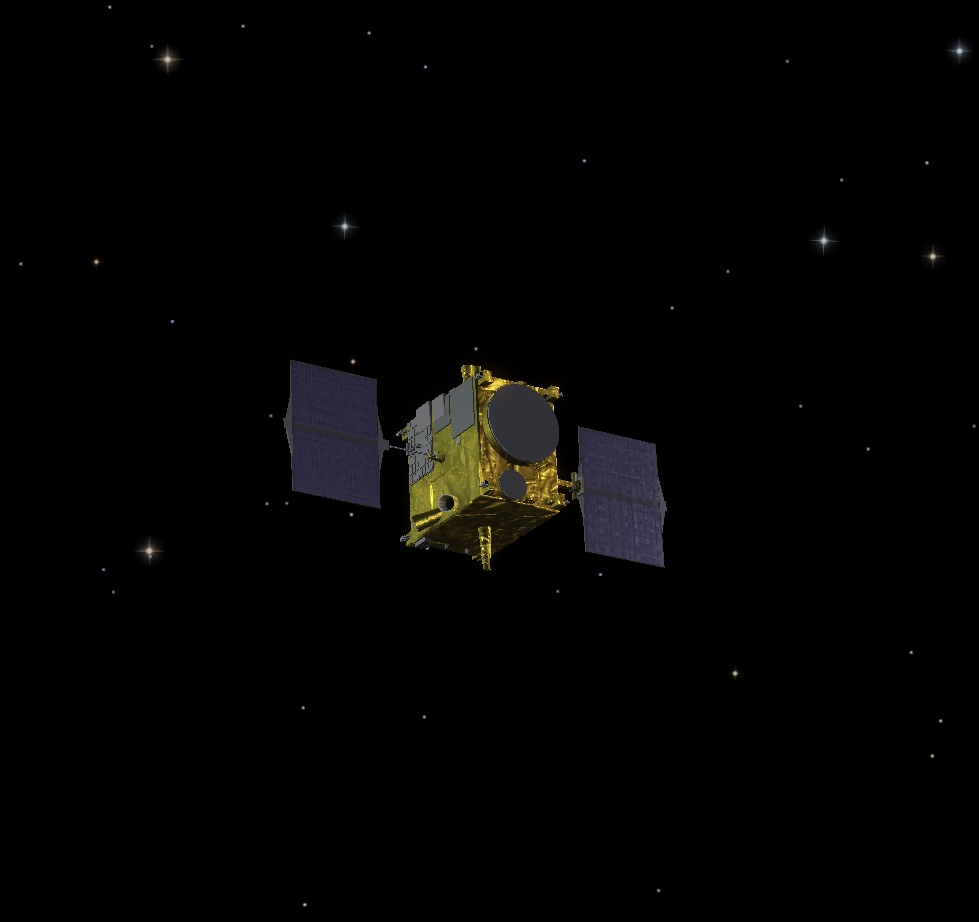

Section Aérospatial
En savoir plus sur les satellites
Cette page contient: 13chapitres

Chapitre 1 : Introduction aux Satellites
Les satellites sont des objets en orbite autour de la Terre ou d'autres corps célestes. Leur utilisation s'étend à divers domaines tels que les communications, l'observation de la Terre, la météorologie, et la navigation.
Chapitre 2 : Histoire des Satellites
Les premiers satellites artificiels ont été lancés dans les années 1950 et ont ouvert la voie à une ère de communication mondiale et d'exploration spatiale.
Chapitre 3 : Types de Satellites
Il existe différents types de satellites, y compris les satellites de communication, d'observation de la Terre, de navigation (GPS), et scientifiques.
Chapitre 4 : Utilisations des Satellites dans les Communications
Les satellites jouent un rôle central dans les communications mondiales, facilitant les télécommunications, Internet, la télévision par satellite, et bien plus encore.
Chapitre 5 : Satellites et Observation de la Terre
Les satellites d'observation de la Terre fournissent des images et des données essentielles pour la surveillance environnementale, agricole, urbaine, et la gestion des catastrophes naturelles.
Chapitre 6 : Satellites et Météorologie
Les satellites météorologiques collectent des données cruciales pour les prévisions météorologiques, les alertes précoces sur les phénomènes météorologiques extrêmes, et la surveillance du climat.
Chapitre 7 : Navigation par Satellite (GPS)
Le système de positionnement global (GPS) utilise des constellations de satellites pour fournir des informations de localisation précises pour la navigation terrestre, maritime, et aérienne.
Chapitre 8 : Satellites Scientifiques et de Recherche
Les satellites scientifiques mènent des études sur l'espace, le Soleil, les planètes, les galaxies, et sont essentiels pour la recherche astronomique et astrophysique.
Chapitre 9 : Évolution Technologique des Satellites
Les progrès technologiques ont permis des innovations telles que les satellites miniatures, les constellations de satellites à faible orbite, et les technologies d'imagerie avancée.
Chapitre 10 : Applications Innovantes des Satellites
Les nouvelles applications incluent l'Internet haut débit par satellite, la surveillance de la biodiversité, l'agriculture de précision, et les prévisions de trafic urbain.
Chapitre 11 : Défis et Solutions dans l'Utilisation des Satellites
Les défis comprennent la gestion des débris spatiaux, la durabilité des orbites, et la sécurité des communications satellite. Les solutions incluent le nettoyage des débris et l'amélioration des technologies de propulsion.
Chapitre 12 : Impact des Satellites sur la Vie Quotidienne
Les satellites ont un impact profond sur notre vie quotidienne, en facilitant la communication mondiale, en améliorant les prévisions météorologiques, en soutenant la navigation, et en fournissant des données cruciales pour la recherche scientifique.
Chapitre 13 : Futur des Satellites et Perspectives
Le futur des satellites promet des avancées encore plus significatives avec des innovations telles que les constellations de satellites à haute capacité, les satellites propulsés par plasma, et leur rôle croissant dans l'exploration spatiale et l'observation globale.
Conclusion : Le Rôle Central des Satellites dans notre Avenir
En conclusion, les satellites représentent une technologie essentielle qui continue de transformer notre façon de vivre, de travailler, et d'explorer l'univers. Leur évolution rapide et leur utilisation diversifiée ouvrent de nouvelles possibilités pour l'humanité, tout en répondant aux défis globaux et en enrichissant notre compréhension du monde qui nous entoure.